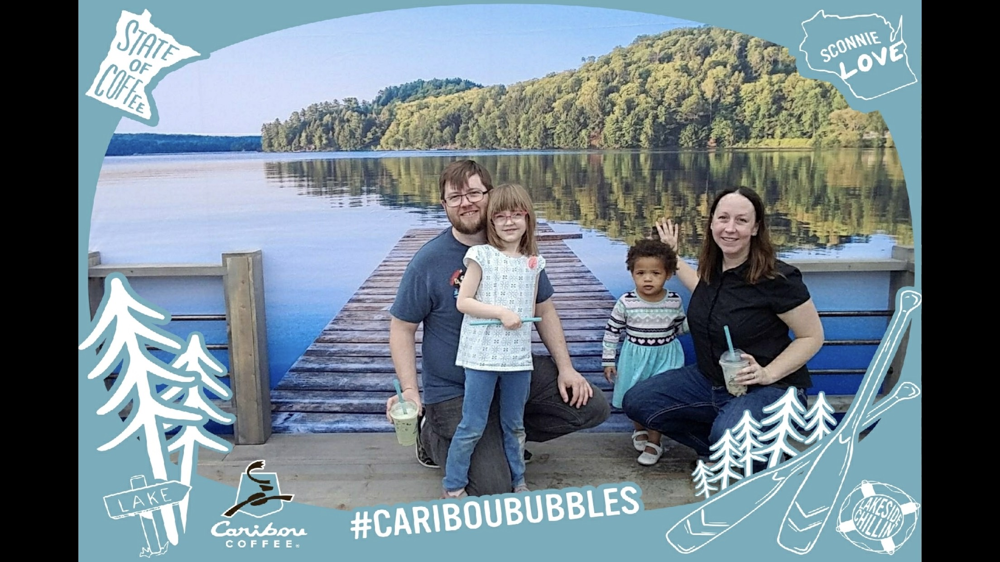

About Her
Rikki graduated from the University of MN Coding Bootcamp. She also attended Metropolitan State University in computer science, and has a BA in Political Science.
Rikki's story: Back in the summer of 2014, I was working on the stock trading floor at a large downtown financial services firm.
It was a job with nice hours and money, but I didn't feel like my talents were fully explored when simply placing trades for other people...
After careful thought, I decided to leave the company and begin a new job in technology.
For awhile, it was scary. I had to learn the new parlence of Technology. I was confused when deprecated meant something totally different to a team of engineers.
But, it's been a great ride, and I never feel bored or unfulfilled while working for new companies in the Twin Cities.
I began my first job in technology at Code42, the cloud backup-company, to start my new career in Tech Support + Billing, learning about server log scanning, local log dives, archive requirements, port connections,
router updates, and general OS troubleshooting that would prevent our software from backing up a file.
I then took an full stack webdeveloper certificate program with MCTC - it was a 6 week intro into HTML, CSS, PHP, and SQL, to describe how full stack development works.
When a recruiter reached out from GovDelivery, I decided to make the hop over to St. Paul, to expand my HTML and CSS skills on the email platform.
I spent 2 years with GovDelivery, learning email design, Twilio text messaging, and then supporting the software using Zendesk for external communications, and Salesforce and Jira for internal communications.
We helped prioritize bugs, enhancements, and worked on-call 24/7 for one week at a time to support server migrations and failover events.
and then expanded into coding over the successive years. While at GovDelivery, our company was sold and became Granicus. I took advantage of the tuitition reimbursement program, and
began to take classes to complete my second Bachelor's Degree, this time in Computer Science. I took classes in Java, Python
and discrete math at MetroState University.
"I'm not afraid to look like a big, hairy, smelly, foreign devil in Tokyo, though I do my best not to, I really do."
Anthony Bourdain

"If you bungle raising your children, it doesn't much matter what else you do well."
Jaqueline Kennedy

"People hearing without listening"
- Paul Simon, The Sound of Silence